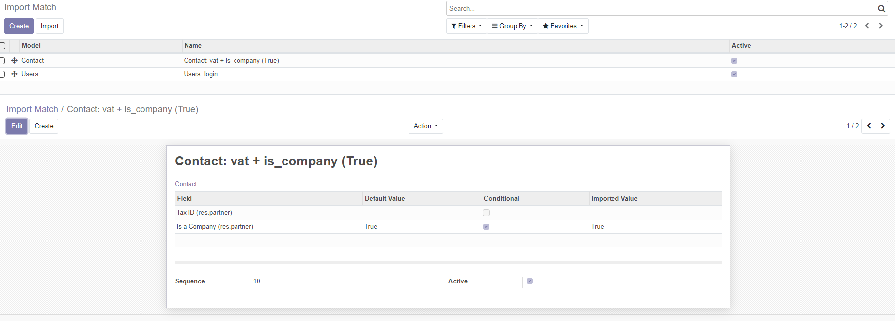

Try to avoid duplicate before importing

Evita di duplicare record importati






This module, inspired to OCA module Base Import Match, allows you to set additional rules to match if a given import record is an update or a new record.
This module can be used to import data from Excel with improved rules.
When importing data (like CSV import) with the standard Odoo base_import module, Odoo follows this rule:
These rules are too simple and data imported will be duplicated every time file is imported.
This module avoid to duplicate records.
User can create his own rules to recognize records.

Questo modulo, ispirato al moduleo OCA Base Import Match, permette di aggiungere regole aggiuntive per combaciare se un record è da modificare o da creare.
Questo modulo è utilizzabile da chi deve importare dati con regole evolute.
Quando si importa dati (esempio un CSV) con il modulo standard di Odoo base_import, sono applicate solo 2 regole:
Queste regole sono troppo semplici e i dati sono duplicati se il file è importato più volte.
Questo modulo evita le duplicazioni.
L'utente può creare proprie regole di riconoscimento record.
| Description | Descrizione | Z0incomb | Note(s) | |
| Match rules by end user | Regole definite da utente finale | ✅ | Available on plug-in OCA module | |
| Conditional rule | Regola condizionale | ✅ | Available on plug-in OCA module | |
| Default for conditional rule | Valore predefinito per regola condizionale | ✅ | ||
| State depends on Country | Provincia dipendente da nazione | ✅ | ||
| Match boolean values | Confronta valori booleani | ✅ | True/False/1/0 | |


Activate developer mode:
In that list view, rules are sorted by priority

Attivare la modalità sviluppatore.
La lista è ordinata per priorità.


To use this module, you need to:
You can fill data column depending on field type:

Per utilizzare questo modulo:
I dati da compilare dipendono dal tipo di campo:
Please, before buy this module, check for base version and if it is older, update base module to most recent version.
Authors | Autori:
Contributors | Partecipanti:
This module is maintained by the SHS_AV s.r.l..
This module is part of connector project.
Published information on | Informazioni pubblicate: 2024-04-02